第一次课 · 第六节：系统与产品方案
从系统分层、三环节流程、页面任务到角色权限、状态版本及异常承接；P39—P43留空供教师粘贴截图。 共15页（P34—P48），含章节标题页和逐页教师备注。
P34 · 章节标题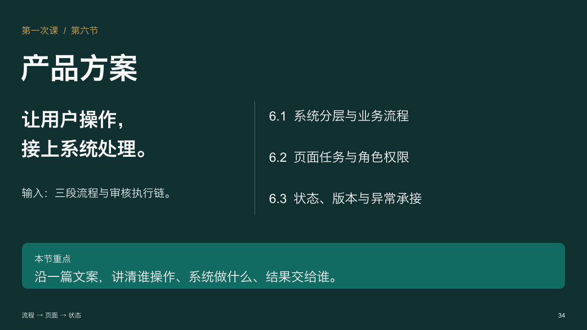
P35 · 系统分层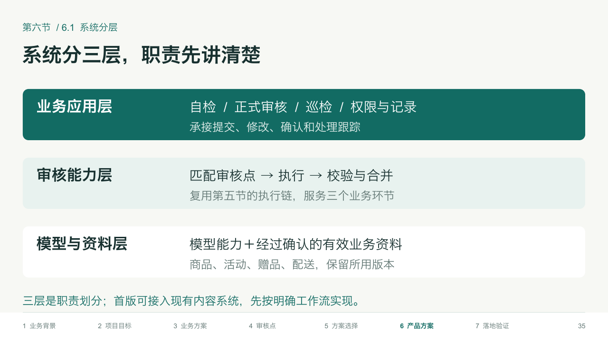
P36 · 自检流程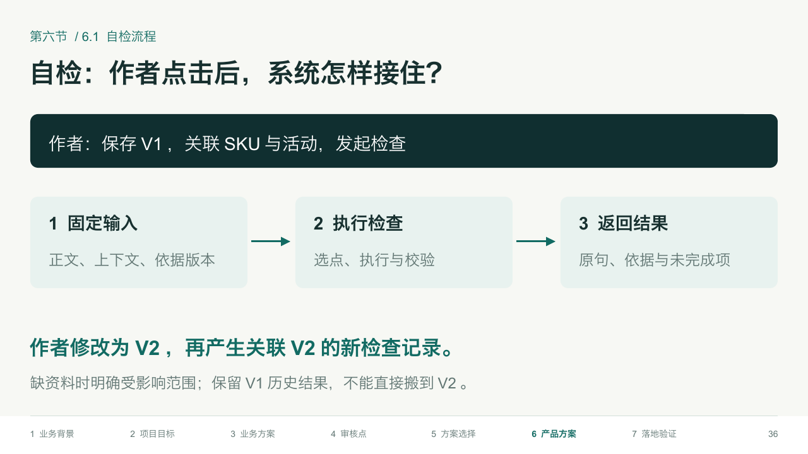
P37 · 正式审核流程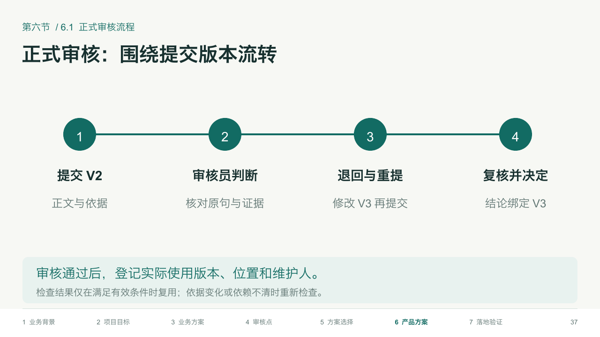
P38 · 巡检流程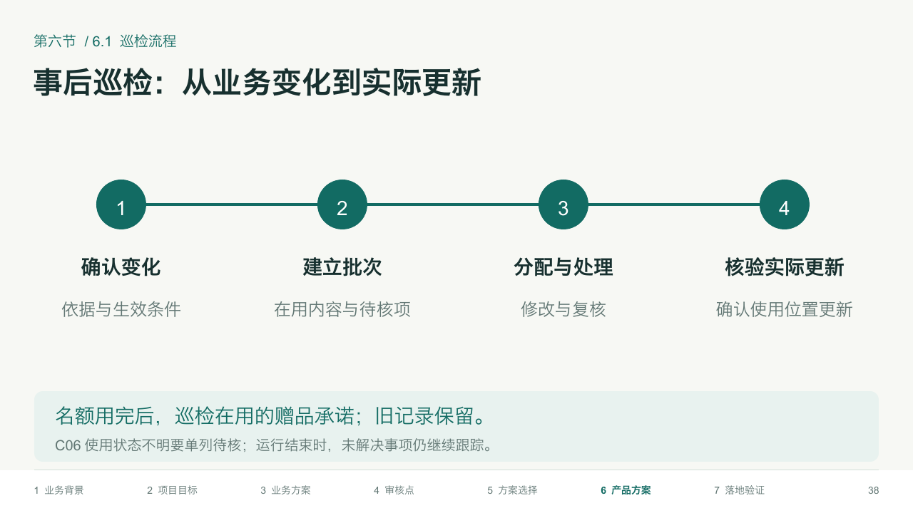
P39 · 内容编辑与自检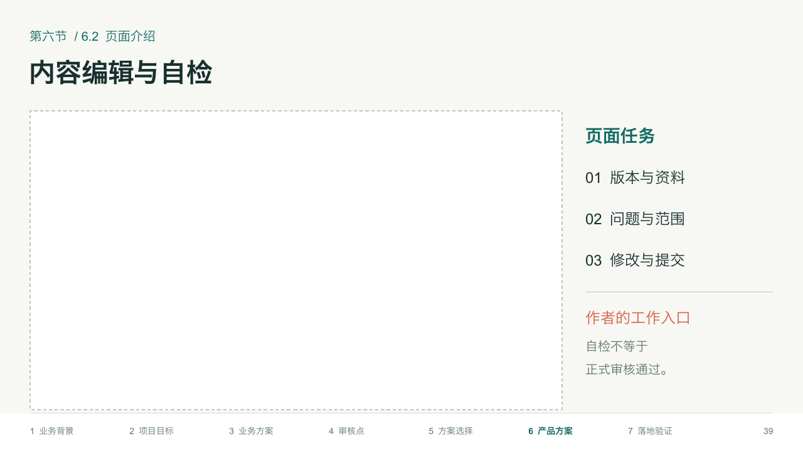
P40 · 审核任务列表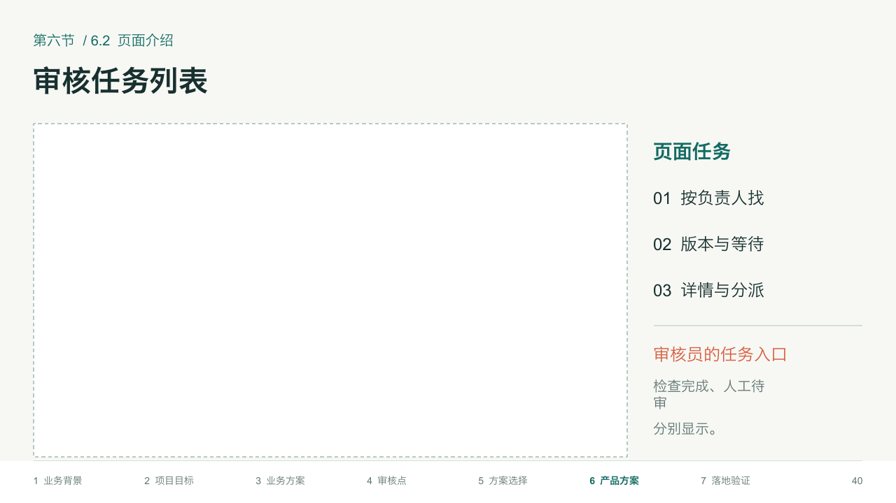
P41 · 审核详情与修改复核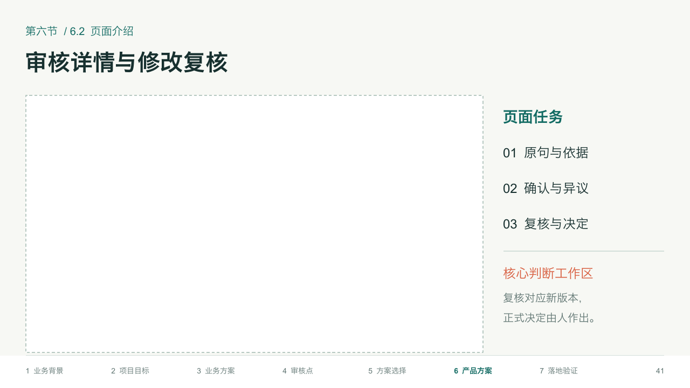
P42 · 巡检批次与问题处理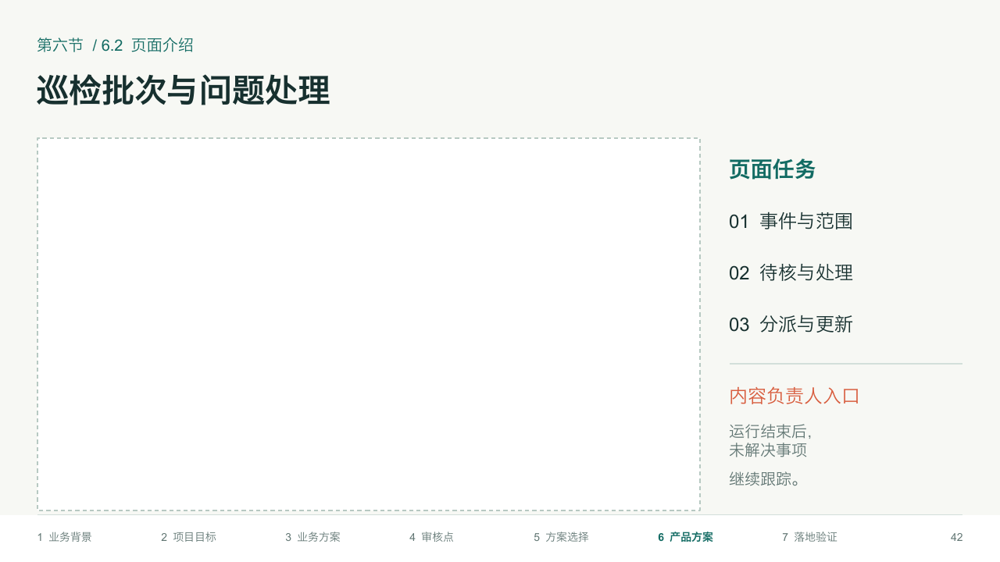
P43 · 资料与审核点管理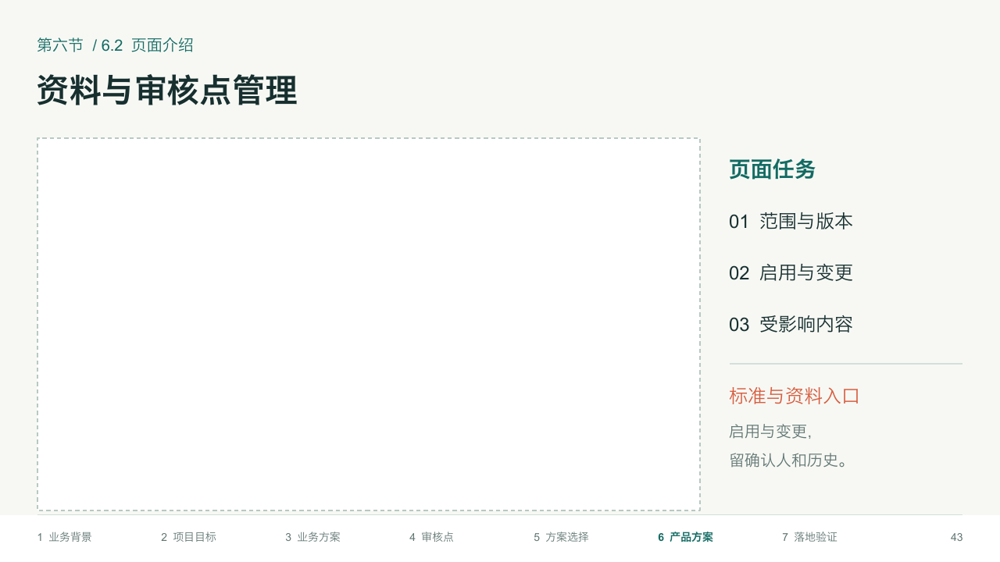
P44 · 角色与权限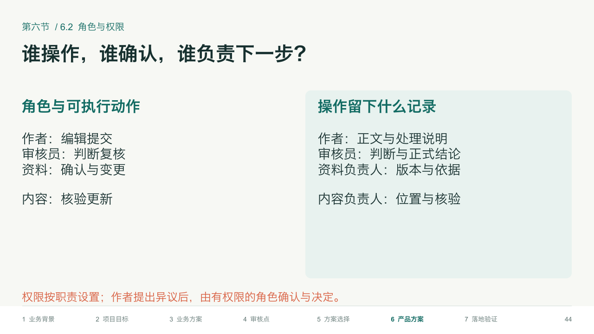
P45 · 状态与记录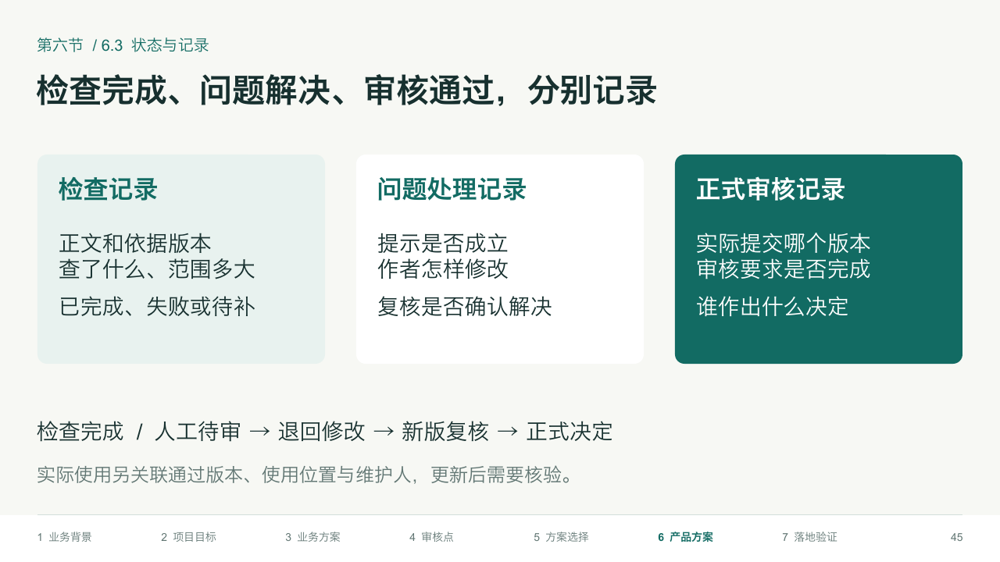
P46 · 版本与结果有效性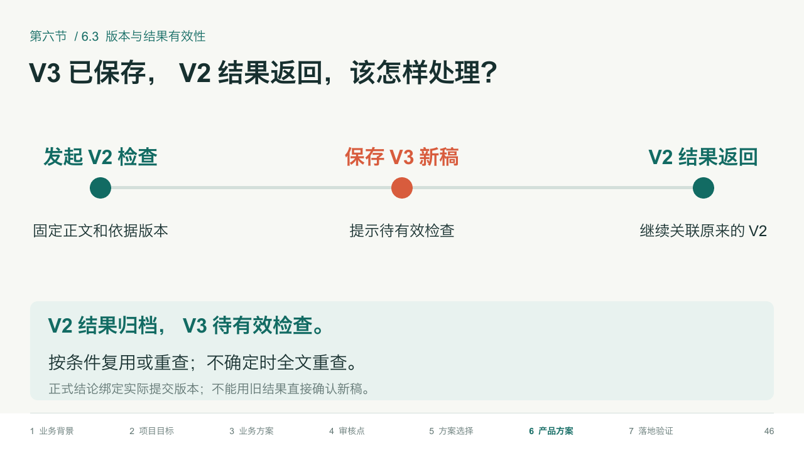
P47 · 异常与承接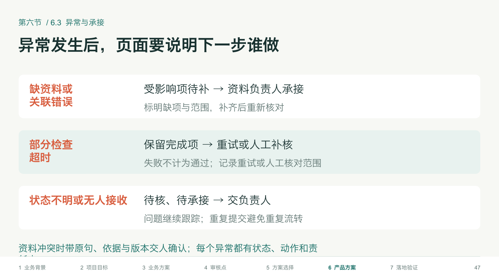
P48 · 产品方案小结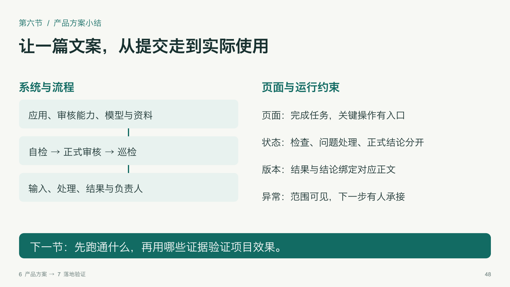
复用结构强化版原生模板。画面由实际PPTX渲染；案例、方案与期望判断为教学推演，尚未实测。讲解细节在教师备注中。